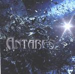

| Artist: | Antares |
| Title: | Choking The Stone |
| Label: | self produced C08508 |
| Length(s): | 45 minutes |
| Year(s) of release: | 2001 |
| Month of review: | [09/2001] |
| 1) | Ragamuffin Rag-And-Bone-Man | 6.50 |
| 2) | Letting Go | 6.28 |
| 3) | Ethnic Cleansing | 5.33 |
| 4) | Half Of The Mirror | 9.51 |
| 5) | Circle Of Keys | 4.17 |
| 6) | Choking The Stone | 12.33 |
A slow bass opens Letting Go. I am reminded here of the darker and intimate of Fish's solo songs. Then the band steps in full force, but only for a short time, because the vocal parts with its meandering vocal melody needs only little accompaniment. The more up-beat following passage has some aspects of Cliffhanger.Again, the band does well melodically and the vocalist has the right attitude and emotions. One might reminded (a bit) of Peter Hammill here. The heavy guitars give partly an impression of prog metal, but the music is more heavy than fast, especially once we move into Ethnic Cleansing (in which we hear some words about Milosevic). The opening keyboards sequence is really good and actually together with the vocals and heavy guitars this part is really grandiose.
Half Of The Mirror is a slow opening piece of some length. The first part has strong Arabic leanings with short bursts on rhythmic guitar and a wandering melody. The song is a long and rather bombastic sounding piece, plodding in the rhythm section and not as distinctive as the previous pieces.
Circle Of Keys opens quite heavy and full. After a long intro of this kind the music almost disappears to leave us with a lonely sounding vocalist. Again, the performance brings Peter Hammill and Andy Tillison to mind (although it is not the voice itself, only the performance). A rather compact track, full of meaningful transitions and change-overs.
The album concludes with the longish title track. In this track the band tries to put everything at once, and pulls it off. There are really some great moments in here. I do get the feeling that the vocalist could be a bit more stable, sound a bit more sure of himself. Or maybe it is simply the way of recording. Again, the band manages to combine the neo-progressive style with prog metal and make it all come out fresh and captivating.
Having listened to the whole of it, I really like the album, but something is nagging in my mind. I think it is the fact that there's something about it which has not yet stabilized. I guess this has to do with production and confidence. In that sense the album sounds a bit like a demo cd (which maybe it is). But then again, it is an extremely good one.